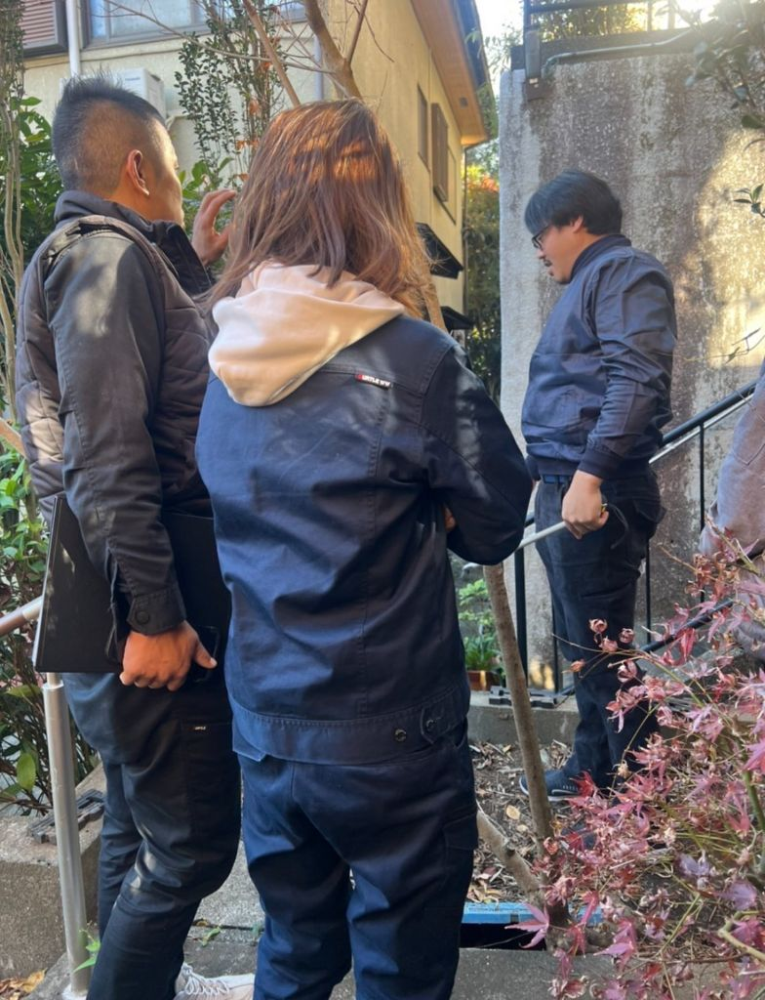

雨漏りの原因が分からない時の調査方法｜プロの特定手順を完全解説
公開日：2026年2月17日
「雨漏りしてるのに原因が分からない…」そんな時こそプロの出番。見えない原因を突き止める4つの調査方法を解説します。

プロによる現地調査 - 原因を徹底的に特定
こんな悩みありませんか？
- 雨漏りしてるのに、どこから入ってるか分からない
- 業者に見てもらったけど原因不明と言われた
- 修理したのにまた雨漏りする（再発）
- 晴れてる日も濡れている（雨漏りなのか結露なのか不明）
雨漏りの原因が分からない―これは本当に困りますよね。実は、雨漏りの原因特定は非常に難しいのです。
なぜなら、水が垂れている場所と、雨水が侵入している場所は違うことがほとんどだから。町田市や横浜青葉区、麻生区など、築20年以上の住宅が多いエリアでは、複数箇所から雨水が入り込んでいるケースもよくあります。
この記事では、プロが実際に使っている原因調査の方法と、あなた自身でもできる確認ポイントを解説します。
なぜ雨漏りの原因は分からないのか？
雨漏りの原因が分からない理由は、主に以下の3つです。
1 水の浸入口と出口が違う
最も多いパターン。例えば、屋根から水が入っても、天井裏を伝って別の場所から垂れてきます。
実例（日野市 Y様邸）：
- • 症状：2階の寝室の天井から雨漏り
- • 原因：実は1階の庇（ひさし）の劣化
- • 経路：庇→外壁内部→2階天井裏へ伝う
2 複数箇所から同時に浸入
築年数が古い家では、複数の劣化箇所から雨水が入り込んでいることがあります。
稲城市など築30年以上の住宅では、屋根・外壁・雨樋など複数箇所が同時に劣化していることが多いです。
3 特定の条件でしか雨漏りしない
「強風を伴う雨の時だけ」「台風の時だけ」など、条件が限定される雨漏りは原因特定が困難。
例：南風の時だけ雨漏り → 南側の外壁の特定箇所に問題がある、など。
プロが使う4つの調査方法
雨漏りの原因を特定するために、プロは以下の4つの調査方法を使います。
1 目視調査（基本）
屋根・外壁・雨樋などを直接目で見て確認する方法。最も基本的ですが、経験豊富な職人なら80%程度の原因は特定できます。
チェックポイント：
- • 屋根材のひび割れ・ズレ・浮き
- • 外壁のひび割れ・コーキングの劣化
- • 雨樋の詰まり・破損・オーバーフロー
- • 板金の浮き・サビ
- • 天井裏・小屋裏の濡れた跡
2 散水調査（再現性あり）
実際に水をかけて雨漏りを再現する方法。原因箇所を絞り込んだ後、最終確認として使います。
やり方：
- 1. 怪しい箇所にホースで水をかける
- 2. 室内で雨漏りが再現されるか確認
- 3. 場所を変えながら徐々に絞り込む
- 4. 原因箇所を特定
注意：やり方を間違えると被害が拡大します。必ずプロに依頼してください。
3 赤外線サーモグラフィ調査（最新技術）
赤外線カメラで温度差を検知し、濡れている箇所を可視化する最新の調査方法。
メリット：
- ✅ 壁を壊さずに調査できる
- ✅ 広範囲を短時間で確認できる
- ✅ 見えない場所の水の流れも分かる
- ✅ 断熱不良や結露との区別が可能
4 発光液調査（特殊な場合）
蛍光塗料を含んだ液体を流し、紫外線ライトで水の経路を追跡する方法。他の方法で分からない時の最終手段。
こんな時に使う：
- • 複数箇所から浸入している疑いがある
- • 散水調査で再現できない
- • 天井裏が複雑で経路が分からない
原因特定の3ステップ
プロはこの順番で原因を特定していきます。
Step 1 症状の確認・ヒアリング
- • いつから雨漏りしているか
- • どんな天候の時に雨漏りするか（強風時だけ、など）
- • 過去に修理したことはあるか
- • 増改築やリフォームの履歴
Step 2 目視調査で候補を絞る
- • 屋根・外壁・雨樋を目視で確認
- • 天井裏・小屋裏の濡れた跡を確認
- • 怪しい箇所を3〜5箇所ピックアップ
Step 3 散水調査で最終確認
- • 候補箇所に順番に水をかける
- • 雨漏りが再現されるか確認
- • 原因箇所を特定
重要：原因が複数の場合
町田市や横浜青葉区など築年数の古い住宅では、複数箇所から同時に雨水が入り込んでいることがあります。この場合、全ての原因箇所を修理しないと雨漏りは止まりません。
自分でできる簡易チェック
プロに依頼する前に、自分でも確認できるポイントがあります。
セルフチェックリスト
-
1
雨漏りのタイミングを記録
「雨の日」だけでなく、「強風時」「南風の時」など詳しく記録すると原因特定のヒントに
-
2
雨漏り箇所の真上を確認
2階で雨漏りしている場合、屋根裏を確認（懐中電灯で照らす）
-
3
外壁のひび割れチェック
窓枠周辺・配管貫通部・換気扇周りは特に注意
-
4
雨樋の状態を確認
詰まり・破損・オーバーフローしていないか（稲城市や日野市は落ち葉が多いので特に注意）
-
5
写真を撮る
雨漏り箇所・屋根・外壁など、気になる部分は全て写真に残す
注意：屋根に登るのは危険！
原因を確認するために屋根に登るのは絶対NG。転落事故が多発しています。地上から確認できる範囲に留め、詳しい調査はプロに任せましょう。
よくある質問（FAQ）
Q1: 原因調査だけでも費用はかかりますか？
A: 目視調査は無料、散水調査は3万円〜が相場です。
当社では目視調査・原因説明まで無料で対応します。散水調査が必要な場合のみ、事前に費用をお伝えします。調査後に「やっぱりやめます」でもOKです。
Q2: 他社で「原因不明」と言われました。本当に分からないのでしょうか？
A: 経験不足か、調査が不十分な可能性があります。
雨漏りの原因特定には経験とノウハウが必要です。麻生区や町田市で11年以上、3500件以上の雨漏り修理を手がけてきた当社なら、ほぼ100%原因を特定できます。セカンドオピニオンとしてご相談ください。
Q3: 原因が複数ある場合、全部直さないとダメですか？
A: はい、全て直さないと雨漏りは止まりません。
「とりあえず一番ひどい箇所だけ」では不十分です。複数箇所から水が入っている場合、全て塞がないと再発します。優先順位をつけて段階的に修理する方法もご提案できます。
Q4: 調査してもらうタイミングはいつがいいですか？
A: 雨漏り直後がベストです。
雨漏り直後であれば、濡れた跡が残っているため原因を特定しやすくなります。晴れの日が続くと跡が消えてしまい、調査が難しくなることも。雨漏りしたら、できるだけ早くご連絡ください。
まとめ：原因が分からない時こそプロへ相談を
この記事のポイント
- 原因が分からない理由：水の浸入口と出口が違う、複数箇所、条件限定
- 4つの調査方法：目視・散水・サーモグラフィ・発光液
- 特定の手順：ヒアリング→目視で絞る→散水で確認
- 自己判断は危険：屋根に登らない、プロに任せる
雨漏りの原因が分からない時、自己判断で修理するのは危険です。間違った箇所を直しても雨漏りは止まらず、費用と時間の無駄になります。
町田市・横浜青葉区・麻生区・稲城市・日野市など、当社が対応エリアであれば、無料で原因を調査します。11年間で3500件以上の実績があるからこそ、「他社で分からなかった原因」も特定できる自信があります。まずはLINEで写真を送ってみてください。
原因が分からない？まずは無料診断
LINEで雨漏り箇所の写真を送るだけ！
11年の経験と3500件の実績で、原因を突き止めます。
📍 町田市・横浜青葉区・麻生区・稲城市・日野市など、神奈川・東京エリア対応
✅ 調査無料 ✅ 原因説明無料 ✅ 見積もり無料 ✅ 最長10年保証